!unzip /content/ds-take-home-dataset.zipArchive: /content/ds-take-home-dataset.zip
inflating: ds-take-home-dataset.csv April 10, 2021
“This is another take home assignment that I did for a company as part of their interview process”
This blog post has the code and details, of the take home project that I did for a company as part of their interview process, they gave me a dataset with sales details of a clothes/accessories from their website, the task was to make a price prediction/suggestion for a piece of wardrobe that the customer would like to sell on their company’s platform.
Archive: /content/ds-take-home-dataset.zip
inflating: ds-take-home-dataset.csv Collecting scikit-learn
Downloading https://files.pythonhosted.org/packages/5c/a1/273def87037a7fb010512bbc5901c31cfddfca8080bc63b42b26e3cc55b3/scikit_learn-0.23.2-cp36-cp36m-manylinux1_x86_64.whl (6.8MB)
|████████████████████████████████| 6.8MB 5.3MB/s
Collecting threadpoolctl>=2.0.0
Downloading https://files.pythonhosted.org/packages/f7/12/ec3f2e203afa394a149911729357aa48affc59c20e2c1c8297a60f33f133/threadpoolctl-2.1.0-py3-none-any.whl
Requirement already satisfied, skipping upgrade: scipy>=0.19.1 in /usr/local/lib/python3.6/dist-packages (from scikit-learn) (1.4.1)
Requirement already satisfied, skipping upgrade: numpy>=1.13.3 in /usr/local/lib/python3.6/dist-packages (from scikit-learn) (1.18.5)
Requirement already satisfied, skipping upgrade: joblib>=0.11 in /usr/local/lib/python3.6/dist-packages (from scikit-learn) (0.16.0)
Installing collected packages: threadpoolctl, scikit-learn
Found existing installation: scikit-learn 0.22.2.post1
Uninstalling scikit-learn-0.22.2.post1:
Successfully uninstalled scikit-learn-0.22.2.post1
Successfully installed scikit-learn-0.23.2 threadpoolctl-2.1.0| id | attr1 | attr2 | attr3 | attr4 | attr5 | attr6 | title | sold_price | |
|---|---|---|---|---|---|---|---|---|---|
| 0 | 742122 | 4 | 27 | 149.0 | 3808.0 | 1.0 | 99.0 | one teaspoon bandit distressed denim shorts (23) | 65.0 |
| 1 | 652751 | 4 | 3 | 89.0 | 1996.0 | NaN | 1500.0 | gucci emily mini guccissima mini red leather bag | 600.0 |
| 2 | 228229 | 4 | 26 | 301.0 | 5194.0 | NaN | 89.0 | steve madden polka dot wedges 8.5 - wi06 | 12.0 |
| 3 | 645810 | 4 | 27 | NaN | 6335.0 | NaN | 0.0 | crown & ivy navy blue floral print shorts | 12.0 |
| 4 | 854374 | 4 | 22 | 302.0 | 3606.0 | 2.0 | 45.0 | grey wide leg dress pants | 22.0 |
<class 'pandas.core.frame.DataFrame'>
RangeIndex: 1029850 entries, 0 to 1029849
Data columns (total 9 columns):
# Column Non-Null Count Dtype
--- ------ -------------- -----
0 id 1029850 non-null int64
1 attr1 1029850 non-null int64
2 attr2 1029850 non-null int64
3 attr3 843080 non-null float64
4 attr4 864417 non-null float64
5 attr5 495664 non-null float64
6 attr6 1029850 non-null float64
7 title 1029761 non-null object
8 sold_price 1029850 non-null float64
dtypes: float64(5), int64(3), object(1)
memory usage: 70.7+ MBNumber of Listing Id labels: 999850
Number of Listings in the Dataset: 1029850| id | attr1 | attr2 | attr3 | attr4 | attr5 | attr6 | sold_price | |
|---|---|---|---|---|---|---|---|---|
| count | 1.029850e+06 | 1.029850e+06 | 1.029850e+06 | 843080.000000 | 864417.000000 | 495664.000000 | 1.029850e+06 | 1.029850e+06 |
| mean | 4.999636e+05 | 3.792792e+00 | 1.611883e+01 | 170.677981 | 3026.511901 | 1.452339 | 4.572187e+09 | 1.959587e+02 |
| std | 2.886351e+05 | 5.353355e-01 | 1.087543e+01 | 91.907382 | 1842.932124 | 0.497728 | 4.594750e+12 | 1.440187e+03 |
| min | 1.000000e+00 | 1.000000e+00 | 1.000000e+00 | 1.000000 | 1.000000 | 1.000000 | 0.000000e+00 | 0.000000e+00 |
| 25% | 2.500282e+05 | 4.000000e+00 | 3.000000e+00 | 89.000000 | 1453.000000 | 1.000000 | 2.700000e+01 | 1.500000e+01 |
| 50% | 4.999745e+05 | 4.000000e+00 | 1.400000e+01 | 180.000000 | 2896.000000 | 1.000000 | 1.190000e+02 | 5.000000e+01 |
| 75% | 7.499088e+05 | 4.000000e+00 | 2.600000e+01 | 252.000000 | 4425.000000 | 2.000000 | 6.000000e+02 | 2.790000e+02 |
| max | 9.998500e+05 | 4.000000e+00 | 3.500000e+01 | 306.000000 | 6640.000000 | 3.000000 | 4.662595e+15 | 8.979010e+05 |
There are missing values in some columns, so let’s start by analysing them first.
There are 20000 listings with no price details, we might be better off removing them
attr3 0.181357
attr4 0.160638
attr5 0.518703
title 0.000086
dtype: float64There is a sizeable chunk of missing data in feature attrs5 Let’s try to see whether they influence the price of a listing.
#collapse
def analyse_na_value(df, var):
df = df.copy()
# let's make a variable that indicates 1 if the observation was missing or zero otherwise
df[var] = np.where(df[var].isnull(), 1, 0)
# let's compare the median sold_price in the observations where data is missing
# vs the observations where a value is available
df.groupby(var)['sold_price'].median().plot.bar()
plt.title(var)
plt.show()
for var in vars_with_na:
analyse_na_value(data, var)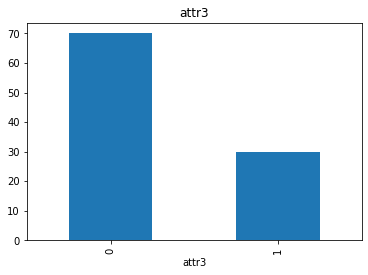
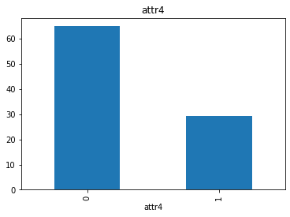
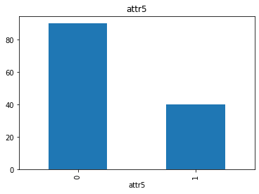
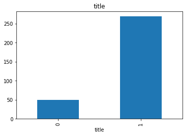
There is a change in the value of the sold_price when some attributes are empty, we should try to input this relationship when performing feature engineering
Almost all the features we have are categorical according to the instuctions given, let us try to analyze the only numeric variable attr6
count 1.029850e+06
mean 4.572187e+09
std 4.594750e+12
min 0.000000e+00
25% 2.700000e+01
50% 1.190000e+02
75% 6.000000e+02
max 4.662595e+15
Name: attr6, dtype: float64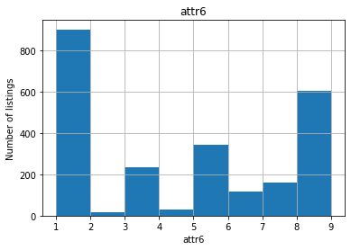
We can see that the variable is not normally distributed, We should remember to deal with this.
The feature attr6 is an interesting feature (Which can be clarified if it had a name) because the 20% values of that feature is Zero. This causes a confusion as to whether it is a categorical or numerical variable. A pie chart to view the counts.
Percentage of zeros in attr6
Percentage of non-zeros in attr6
As per the instructions the categorical variables are
Let’s check the cardinality
We do have huge number of categories in attr3 and attr4, let’s see about the rare labels with respect to the sold prices of the listing.
#collapse
def analyse_rare_labels(df, var, rare_perc):
df = df.copy()
# determine the % of observations per category
tmp = df.groupby(var)['sold_price'].count() / len(df)
# return categories that are rare
return tmp[tmp < rare_perc]
# print categories that are present in less than
# .1 % of the observations
for var in cat_vars:
print(analyse_rare_labels(data, var, 0.001))
print()Series([], Name: sold_price, dtype: float64)
attr2
4 0.000229
5 0.000979
7 0.000657
8 0.000653
10 0.000738
18 0.000559
23 0.000122
29 0.000257
34 0.000841
35 0.000574
Name: sold_price, dtype: float64
attr3
1.0 0.000804
2.0 0.000156
5.0 0.000304
6.0 0.000084
7.0 0.000766
...
297.0 0.000006
299.0 0.000102
303.0 0.000664
305.0 0.000013
306.0 0.000770
Name: sold_price, Length: 197, dtype: float64
attr4
1.0 5.826091e-06
2.0 1.340001e-04
3.0 2.233335e-05
4.0 4.757974e-05
5.0 9.710152e-07
...
6636.0 2.126523e-04
6637.0 2.524640e-05
6638.0 5.826091e-06
6639.0 9.710152e-07
6640.0 2.913046e-06
Name: sold_price, Length: 6510, dtype: float64
attr5
3.0 9.710152e-07
Name: sold_price, dtype: float64
attr4 has a lot of rare labels 6510 (98% of total unique labels)
We should try relating each category with the sold_price
Before we do the actual feature engineering, let’s split the data to train and test sets.
Since we need to be able to evaluate the model based on the bins of sold_price like 0-50, 50-100, 100-500, 500-1000 and 1000+., Let’s stratify the splitting by creating bins of the target variable
Avoid zero price listings
array([ 0. , 111.11111111, 222.22222222, 333.33333333,
444.44444444, 555.55555556, 666.66666667, 777.77777778,
888.88888889, 1000. ])Let’s check the percentage of missing values in the data
attr3 0.181816
attr4 0.160420
attr5 0.518667
title 0.000089
dtype: float64attr3 0.180113
attr4 0.161057
attr5 0.518562
title 0.000083
dtype: float64All the features with missing variables are categorical/string variables, so let’s just assign some arbitrary value missing to them.
# replace missing values with new label: "No Value Present" for title
# and with an arbitrary number for others
miss_cat = ['attr3', 'attr4', 'attr5']
X_train[miss_cat] = X_train[miss_cat].fillna(-9999)
X_test[miss_cat] = X_test[miss_cat].fillna(-9999)
X_train['title'] = X_train['title'].fillna('No Value Present')
X_test['title'] = X_test['title'].fillna('No Value Present')[][]As per the instruction the variable Id is kind of a temporal variable indicating the time in which the item was sold. So we can see if it helps with the prediction
Our only numeric variable as per the instruction is attr6 and it has no missing values so we do not need to touch that for now.
#collapse
def find_frequent_labels(df, var, rare_perc):
# function finds the labels that are shared by more than
# a certain % of the listings in the dataset
df = df.copy()
tmp = df.groupby(var)['sold_price'].count() / len(df)
return tmp[tmp > rare_perc].index
for var in cat_vars:
# find the frequent categories
frequent_ls = find_frequent_labels(X_train, var, 0.001)
# replace rare categories by an arbitrary number
X_train[var] = np.where(X_train[var].isin(
frequent_ls), X_train[var], -999)
X_test[var] = np.where(X_test[var].isin(
frequent_ls), X_test[var], -999)# this function will assign discrete values to the values of the variables,
# so that the smaller value corresponds to the category that shows the smaller
# mean sold_price
def replace_categories(train, test, var, target):
# order the categories in a variable from that with the lowest
# house sale price, to that with the highest
ordered_labels = train.groupby([var])[target].mean().sort_values().index
# create a dictionary of ordered categories to integer values
ordinal_label = {k: i for i, k in enumerate(ordered_labels, 0)}
with open(f'{var}.json', 'w') as f: json.dump(ordinal_label, f)
# use the dictionary to replace the categorical strings by integers
train[var] = train[var].map(ordinal_label)
test[var] = test[var].map(ordinal_label)# for displaying monotonic relationship
# between labels and target
def analyse_vars(df, var):
# function plots median sold price per encoded category
df = df.copy()
df.groupby(var)['sold_price'].median().plot.bar()
plt.title(var)
plt.ylabel('sold_price')
plt.show()
for var in cat_vars:
analyse_vars(X_train, var)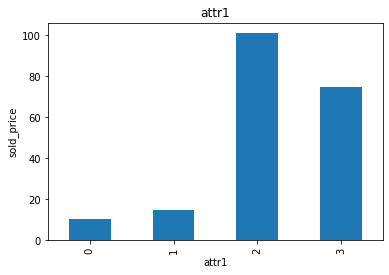
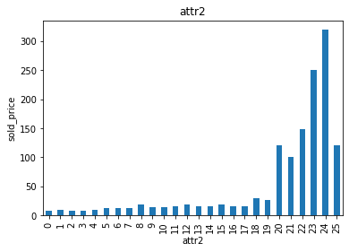
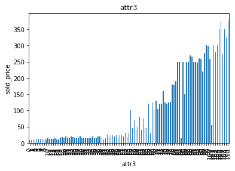
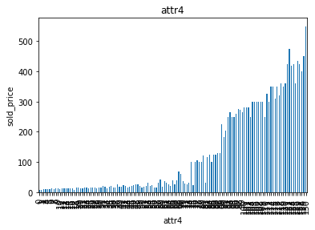
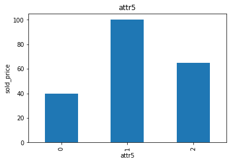
# using tfidf on the text data and reducing the vector dimensions with SVD
text_transformer = Pipeline(
steps=[
('tfidf', TfidfVectorizer()),
('best', TruncatedSVD(n_components=5))
]
)
preprocessor = ColumnTransformer(
transformers=[
('num', numeric_transformer, num_vars),
('text', text_transformer, 'title')
],
remainder='passthrough'
)Let’s look at the target data in a scatter plot
The target has outliers, So transforming the target might help the regression model to fit the data
# to build the model
from sklearn.compose import TransformedTargetRegressor
from sklearn.svm import SVR
from sklearn.linear_model import Lasso, LassoLarsIC, RidgeCV, LinearRegression, RANSACRegressor, SGDRegressor
from sklearn.preprocessing import QuantileTransformer, quantile_transform
# to evaluate the model
from sklearn.metrics import mean_squared_error, r2_score, median_absolute_error
from math import sqrtThe snippet is more or less copied from scikit-learn’s example gallery, this graph shows the effect of transforming the target with quantiles.
# collapse
density_param = {'density':True}
y = X_train.loc[:, 'sold_price'].squeeze()
y_trans = quantile_transform(X_train.loc[:, 'sold_price'].values.reshape(-1, 1),
n_quantiles=300,
output_distribution='normal',
copy=True).squeeze()
f, (ax0, ax1) = plt.subplots(1, 2)
ax0.hist(y, bins=100, **density_param)
ax0.set_ylabel('Probability')
ax0.set_xlabel('Target')
ax0.set_title('Target distribution')
ax1.hist(y_trans, bins=100, **density_param)
ax1.set_ylabel('Probability')
ax1.set_xlabel('Target')
ax1.set_title('Transformed target distribution')
f.suptitle("Listing data: distance to price centers", y=0.035)
f.tight_layout(rect=[0.05, 0.05, 0.95, 0.95])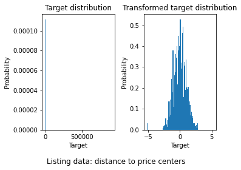
Put together the feature engineering pipeline and model
Model using regularized linear regression
Pipeline(memory='/content',
steps=[('preprocessor',
ColumnTransformer(remainder='passthrough',
transformers=[('num',
Pipeline(steps=[('scaler',
RobustScaler())]),
['attr6', 'id']),
('text',
Pipeline(steps=[('tfidf',
TfidfVectorizer()),
('best',
TruncatedSVD(n_components=5))]),
'title')])),
('regressor',
TransformedTargetRegressor(regressor=SGDRegressor(max_iter=2000),
transformer=QuantileTransformer(output_distribution='normal')))])ColumnTransformer(remainder='passthrough',
transformers=[('num',
Pipeline(steps=[('scaler', RobustScaler())]),
['attr6', 'id']),
('text',
Pipeline(steps=[('tfidf', TfidfVectorizer()),
('best',
TruncatedSVD(n_components=5))]),
'title')])['attr6', 'id']
RobustScaler()
title
TfidfVectorizer()
TruncatedSVD(n_components=5)
TransformedTargetRegressor(regressor=SGDRegressor(max_iter=2000),
transformer=QuantileTransformer(output_distribution='normal'))SGDRegressor(max_iter=2000)
QuantileTransformer(output_distribution='normal')
Try predicting on train and test data to evaluate fit
Let’s have a look at the mean square and median absolute errors of the train and test sets.
#collapse
# We will evaluate performance using the mean squared error and
# the root of the mean squared error and r2
# make predictions for train set
pred = model.predict(X_train)
# determine mse and rmse
print('train mse: {}'.format(int(
mean_squared_error(y_train, pred))))
print('train rmse: {}'.format(int(
sqrt(mean_squared_error(y_train, pred)))))
print('train r2: {}'.format(
r2_score(y_train, pred)))
print()
# make predictions for test set
pred = model.predict(X_test)
# determine mse and rmse
print('test mse: {}'.format(int(
mean_squared_error(y_test, pred))))
print('test rmse: {}'.format(int(
sqrt(mean_squared_error(y_test, pred)))))
print('test r2: {}'.format(
r2_score(y_test, pred)))
print()
print('Median listing price: ', int(y_train.median()))train mse: 2384016
train rmse: 1544
train r2: 0.012738801579374459
test mse: 1420721
test rmse: 1191
test r2: -0.005001811084259344
Median listing price: 60#collapse
# We will evaluate performance using the median abs error and
# the root of the mean squared error and r2
# make predictions for train set
pred = model.predict(X_train)
# determine mae
print('train mae: {}'.format(int(
median_absolute_error(y_train, pred))))
print('train r2: {}'.format(
r2_score(y_train, pred)))
print()
# make predictions for test set
pred = model.predict(X_test)
# determine mae
print('test mae: {}'.format(int(
median_absolute_error(y_test, pred))))
print('test r2: {}'.format(
r2_score(y_test, pred)))
print()
print('Median listing price: ', int(y_train.median()))train mae: 37
train r2: 0.012738801579374459
test mae: 37
test r2: -0.005001811084259344
Median listing price: 60It is kinda evident that the model has not performed well(looking at the \(r^2\) values) maybe I should have used another modeling method to get better results.
Text(0.5, 1.0, 'Evaluation of Lasso Predictions')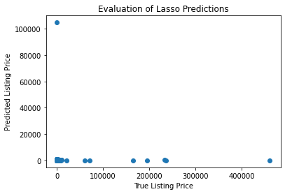
Let’s evaluate our predictions respect to the sold price, In the picture, The blue dots are predicted values and the red ones are the predicted values.
Text(0.5, 1.0, 'Evaluation of Lasso Predictions')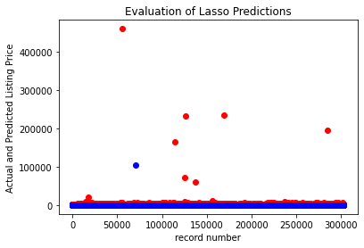
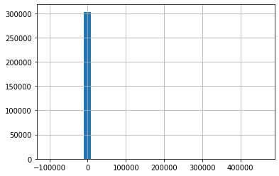
The chart is not very informative but the range of numbers in x axis gives an idea of the error range.
I also did another exercise for the same company, which deals with calculating the feature importances in a model agnostic way. You can have look at that here